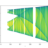

7,50 Euro pro Tag Steuer auf Homeoffice: Schräge Idee der Deutschen Bank
Ein Vorstoß der Deutschen Bank, Abgaben auf das Homeoffice einzuführen, sorgt für Verwunderung und Spott. Erwartete Einnahmen: 15,9 Milliarden Euro.
 und Svenja Schneider arbeiten während der Corona-Pandemie im Home Office an ihren Laptops.")
Dafür auch noch 7,50 Euro am Tag zahlen? Foto: dpa
BERLIN taz | Ein Analyst der Deutschen Bank hat in einem Aufsatz Steuern für Arbeitnehmer im Homeoffice ins Spiel gebracht – und damit auch Kritik und Spott in den sozialen Medien ausgelöst. Auch Wirtschaftsforscher halten die Vorschläge für wenig zielführend.
„Hätte gedacht, man sollte wegen des Klimawandels und der überfüllten Straßen und ÖPNV die Leute fiskalisch nicht dafür bestrafen, dass sie zuhause bleiben“, schrieb etwa Jan Schnellenbach, Wirtschaftsprofessor an der Brandenburgischen Technischen Universität in Cottbus auf Twitter. Sebastian Dullien, Direktor des Instituts für Makroökonomie und Konjunkturforschung der Hans-Böckler-Stiftung, nannte die Vorschläge „schräg“.
Der Autor des kurzen Aufsatzes geht davon aus, dass auch nach der Coronakrise viele Menschen weiter von zu Hause aus arbeiten wollen. „Die Arbeit von zu Hause ermöglicht direkte Einsparungen etwa bei der Anreise, dem Mittagessen, Kleidung und Reinigung“, schreibt er in einem Aufsatz für die Forschungs- und Analyseabteilung der Deutschen Bank, DB Research.
Zudem stehe die Möglichkeit, von zu Hause aus zu arbeiten, vor allem besser verdienenden Arbeitnehmern offen. Systemrelevante Beschäftigte, die sich einem höheren Gesundheitsrisiko aussetzen müssten, hätten hingegen oft keine Wahl, ins Homeoffice auszuweichen.
Unterstützung für Geringverdiener
Der Analyst schlägt deshalb eine Homeoffice-Steuer in Deutschland in Höhe von 5 Prozent des Bruttoeinkommens vor. Bei einem Verdienst von rund 40.000 Euro im Jahr seien dies rund 7,50 Euro pro Homeoffice-Tag.
Der Staat könnte auf diese Weise rund 15,9 Milliarden Euro zusätzlich einnehmen, rechnet der Analyst. Mit dem Geld könnten dann diejenigen unterstützt werden, die ein geringes Einkommen oder ihre Arbeit in der Coronakrise verloren haben.


Leser*innenkommentare
Hans aus Jena
Ich habe zunächst Mehrkosten beim (teilweisen) Homeoffice: mehr Energieverbrauch (Strom, Heizung), mehr Wasserverbrauch, der Kaffee und Obst kostet jetzt (in der Firma nicht), die Monatskarte für den Nahverkehr läuft weiter (brauch ich an den anderen Wochentagen), am Essen spare ich nicht (es ist egal, ob ich mein Brot oder Salat zuhause esse oder in der Firma). Dafür hat Homeoffice andere Vorteile: Infektionsschutz an den Tagen, im Hintergrund kann auch mal eine eigene CD laufen ... Ich brauche somit weder eine Absetzbarkeit bei der Steuer (wie die auch schon einmal diskutiert wurde) noch pauschale Mehrbesteuerung.
amaranco
Wie wäre es denn mal für 7,50 Euro am Tag für jeden Börsenspekulanten? Oder 7,50 pro Tag und pro jedem Deutsche-Bank-Angestellten, wenn wieder mal ein Geldwäsche-Skandal (oder Ähnliches) auffliegt? Ich möchte fast rezitieren "(...) den Balken im eigenen Auge sehen sie nicht!"
snowgoose
@amaranco Allerdings sind doch wohl nicht die normalen Bankangestellten (am Tresen ...) gemeint, oder?
Gerhard Krause
Im Grunde ein absolut geiler Vorschlag. 40.000 Bruttoeinkommen sind indes zu niedrig angesetzt. Sagen wir 80.000. Oder doch besser gleich Vermögenssteuer und Erbschaftsteuer.
Viel besser: Löhne hoch. 🤑
SchnurzelPu
@Gerhard Krause Ach, ich hab diese Diskussionen eigentlich über. Hier ne Schraube, dort ein Rädchen gedreht. Was anstrengend.
Gleiches Geld für alle! Natürlich weniger als der Durchschnitt von jetzt so 5000€ pro Person. Sonst schadet es der Umwelt. Am Jahresende Kassensturz und dann Gewinnanteile auszahlen. Geht ja auch bei AG's , warum nicht im ganz großen Stil?
Gerhard Krause
@SchnurzelPu Falls Sie dies meinen: "Wir können eh einpacken, im Grunde ist die Gemeinschaft im Eimer, die Umwelt verträgt uns auch nicht mehr, eigentlich müssten wir unser Leben inklusive Wirtschaften radikal umstellen." Da stimme ich im Grunde rundum zu.
warum_denkt_keiner_nach?
Woher stammt denn der Gedanke, dass im Büro nur Leute sitzen, die gut verdienen?
SUSANNE FRIEDLICH
Die Idee ist super !!. Aber dann rechne ich Heizung, Miete, Arbeitsplatz gegen. Auch die Fahrkosten, die ich nun nicht absetzen kann müssen bewertet werden, denn der Wagen steht ja da. Das ungenutzte Jahresticket will ich ersetzt haben. Meine Kindern möchten Gutscheine für Sportclubs, weil Sie mich daheim ertragen müssen.
Übrigens: "Was ist denn die Deutsche Bank" macht jetzt jeder Tante Emma Laden Schlagzeilen, Bei dem Börsenwert sollen dich sich bedeckt halten sonst werden sie übernommen. Kann gut sein das Trump das macht um seine Schulden loszuwerden
KnorkeM
Gute Idee. Es fehlen ein paar wichtige Details, um die Menschen am unteren Rand der Einkünfte im Homeoffice zu schützen.
Für Studenten zum Beispiel, die Nebenjobs im Homeoffice machen und ohnehin prekär leben, wäre die Abgabe unzumutbar.
Mein Job lässt kein Homeoffice zu und prekär ist er auch beinahe.
Würde ich dann was vom Kuchen abbekommen?
rosengrob
Also Spitzenvorschlag! Wenn "die Welt" konsterniert kommentiert "so eine (völlig verrückte) Analyse hätte man allenfalls der Linkspartei zugetraut" muss die Sache interessant sein.. Die Linkspartei die sich sowas nicht mehr traut, um den urbanen Teil ihrer Klientel nicht unnötig zu erschrecken...
Mensch Deutsche Bank: wirtschaftspolitisch im Zweifel links? Hausinterner Zensor im Homeoffice gewesen? Ist Kiffen bei Euch jetzt das neue Koksenmuss ich mir Sorgen um Euch machen??
hey87654676
@rosengrob Der Lockdown hinterlässt bei uns allen deutliche Spuren..
LesMankov
Die Deutsche Bank hat sich vermutlich mit Gewerbeimmobilien in Milliardenhöhe verzockt (wetten?) und sucht jetzt verzweifelt nach Möglichkeiten das Homeoffice unattraktiv zu machen. Ansonsten würden sie zum Krisenausgleich einfach ne Vermögensabgabe und höhere Spitzensteuersätze sowie Lohnerhöhungen in Pflege, Schulen und Kitas vorschlagen.
ToKoTroniK
Wie kommt man als Teil der freien Wirtschaft auf die Idee, mehr Steuern zu fordern? Oder ist man eher Teil von etwas anderem geworden ...?
LeSti
@ToKoTroniK Naja, ist schon schlau die Idee. Bevor man Steuern auf Umsätze oder Gewinne fordert, lieber mal den Arbeitnehmer zum Melken vorschicken. Dann kann man als Unternehmen Betriebskosten für weniger genutzte Arbeitsräume sparen, diese ggf sogar untervermieten und muss sich trotzdem nicht für Rettung durch die Krise beteiligen. Das soll mal schön der Angestellte machen, aus Dankbarkeit, dass es seinen Arbeitsplatz überhaupt noch gibt.
snowgoose
@ToKoTroniK Na, wenn man guckt von wem sie gefordert wird, ist keine Verwunderung mehr da.
uvw
Schwachsinn.
Stattdessen Finanztransaktionssteuer, Geldwäschesteuer, Sesselfurzsteuer für Lobbyisten.
Selbstverständlich ist HO gerechtfertigt, wo das möglich ist, aus zig Gründen. Wäre locker 20 Jahre früher drin gewesen, aber den Bediensteten kann man ja nicht trauen, wissen schon ... die gehen während der Arbeitszeit in die Küche und holen sich nen Kaffee!!
Der Banktyp denkt entlang der Privilegienvergabe: HO ist ja irgendwie besser für die draußen, kein Chef geht einem mehr auf den Sack, man verplempert keine anderthalb Stunden jeden Tag mit Fahrerei zur Arbeit und zwischendurch spielt man zur Entspannung E-Bass. Zb.
Ja da können doch nicht einfach jetzt Millionen Leute mehr Privilegien oder auch nur ein etwas angenehmeres Arbeitsleben haben. Das bringt das ganze Kastensystem durcheinander. Das muss ausgeglichen werden, dafür müssen die bezahlen, logo.
RotEiche
Nach meiner Meinung äussert sich der Analyst der Deutschen Bank, Luke Templeman, wie ein kapitalistischer pseudo-linker Aktivist Spin-Doktor, der die grosse Masse der Arbeitenden absolut (oder ihrem sozialen Status nach) ärmer machen will, mit dem Vorwand eine noch schlechter gestellte Minderheit besser zu stellen, was ihn ausserdem wenig kostet.
Erst nimmt der Doktor die Kapitalisten von der Besteuerung der Produktivitäts-Gewinne durch Einsparung von Büroimmobilien (wegen Heimarbeit) weitgehend aus. Gleichzeitig nimmt er den Heimarbeitenden ihren Vorteil (fragwürdig ob es netto überhaupt Vorteilhaft ist) durch Heimarbeit durch Heimarbeitssteuer weg (relative Verelendung).
Zum Schluss gibt der Doktor seinem Vorhaben einen pseudolinken Spin, der von der gesamten Presse aufgegriffen wird („Unterstützung für Geringverdiener“).
Mir scheint, der Doktor posiert als der Gute, indem er eine Umverteilung von Heimarbeitssteuer von den Heimarbeitenden zu den Geringverdienern und den Opfern der Corona-bedingten systemischen Strukturkrise vorschlägt.
Ich sehe als wesentlich für den pseudolinken Charakter seiner „guten“ Absicht, dass diese Quelle der Finanzierung des Existenzminimums die Kapitalisten nichts kostet, denn sie wird von den Heimarbeitenden finanziert. Ich sehe es so, dass eigentlich der dominante Teil des „Systems“, also das Kapital, die Folgen seiner systemischen Strukturkrise (die schon vor Corona bestand) finanzieren muss.
Als gedankliche Voraussetzung dafür, dass die Heimarbeitssteuer als das Gute (Progressive, Linke) posieren kann, sehe ich des Doktor‘s Aufspaltung der Arbeitenden in eine privilegierte Mehrheit (die Heimarbeitenden), die an eine unterprivilegierte Minderheit gefälligst eine Abgabe zu leisten haben.
Lurkus
@RotEiche On point :)
Rudolf Fissner
Wusste ich's doch!
Home OffizieriNnen gehören zu den bösen Profiteuren der Pandemie.
Sven Günther
@Rudolf Fissner So Unrecht hat der Mann grundsätzlich nicht.
Ich merke das persönlich, in den Monaten in denen wir beide Zuhause waren, blieb am Ende des Monats jeweils ein vierstelliger Betrag mehr über, als in den Monaten zuvor und meine Freundin hat während Corona weniger verdient.
Und seitdem jetzt auch noch das Waldstadion, unsere Shishabar, Theater etc. zu haben, wird das noch mehr.
Leser77
@Sven Günther Theater, Shishabar, Restaurants, etc... Was hat das bitte mit Einsparungen durch Home Office zu tun? Dass man im Lockdown insgesamt weniger Möglichkeiten hat, Geld auszugeben, ok. Daraus aber eine HO Steuer abzuleiten, das ist abenteuerlich.
SchnurzelPu
@Sven Günther Da haben sie Recht. Naja, ein Tausender mehr ist es nicht, aber ein paar Hundert sind es schon. Aber nicht primär wegen Home-Office, sondern weil weniger shoppen und essen gehen. Weniger shoppen ist gut. Und wir wollen Mal nicht vergessen, dass wir auf der anderen Seite tausende Euro neue Schulden haben.
Leser77
@Sven Günther Ein vierstellige Betrag? Wie weit pendeln Sie und wo Essen Sie? Ich spare ungefähr eine halbe Tankfüllung Sprit im Monat. Dafür geht die Pendlerpauschale flöten, ich habe höhere Stromkosten durch PC, Monitor & Beleuchtung und brauche einen teureren Internettarif wegen höherem Bandbreitenbedarf. Und dann soll ich noch 5% vom Bruttolohn abgeben? Na, Danke.
Karl Kraus
@Sven Günther Wenn bei Ihnen ein vier(!)stelliger Betrag zusätzlich(!) übrig bleibt, wie viel verdienen Sie denn dann bitte?
Sven Günther
@Karl Kraus Was tut das zur Sache?
Aber wenn es Sie so brennend interessiert, irgendwas dazwischen.
"Als IT Consultant verdienen Sie zwischen 58.500 CHF und 180.000 CHF Brutto im Jahr."
www.lohnanalyse.de...it-consultant.html
Karl Kraus
@Sven Günther Nicht übel! Ihnen täten solche Steuern tatsächlich nicht weh.
Limits2Growth
@Karl Kraus "Wenn bei Ihnen ein vier(!)stelliger Betrag zusätzlich(!) übrig bleibt, wie viel verdienen Sie denn dann bitte?"
Herr Günther würde dann zum Mittelstand des F. Merz gehören. Einfache Einkommensmillionäre halt.
Sven Günther
@Limits2Growth Habe gerade nochmal auf die Steuererklärung für letztes Jahr geschaut, von der Einkommensmillionenen sind wir auch zusammen meilenweit entfernt.
Uns fehlen einfach die lukrativen Nebentätigkeiten wie bei Abgeordneten, wenn wir beide wie Judith Skudenly (FDP) noch 430.000 Euro nebenbei verdienen würden, könnten wir es knapp schaffen. Kassenprüfer im Sportverein oder Jugendtrainer werden, zum Glück, bei uns nur mit Blumen und Rotwein abgegolten.
Rudolf Fissner
@Sven Günther Judith Skudenly ist Rechtsanwältin und Insolvenzverwalterin. Wenn bei Ihnen nur die Nebeneinkünfte die Differenz ausmachen ("Uns fehlen einfach die lukrativen Nebentätigkeiten"), dann gehts Ihnen doch trotzdem noch Goldklasse-mäßig.
Sven Günther
@Rudolf Fissner Ich hab mich hier nirgendwo über zu wenig Gehalt beklagt.
Und was ist denn der Referenzrahmen für Goldklasse-mäßig?
Carl Fischer
@Karl Kraus Wofür ist das relevant?
Ich spare seit April mindestens 400 € im Monat mehr. Auch durch Homeoffice, weil an diesen Tagen nur selten auswärts gegessen wird, macht dann ca. 8€/Tag.
snowgoose
@Carl Fischer Naja typisch ist das nicht, nicht jeder isst auswärts. Steuer sollte wohl doch eher ans Einkommen gebunden werden. Da gibt es noch genug „Steuer-Entzugs-Modelle“. Wenn man die mal angehen würde, hätte ich auch nichts gegen eine „Corona-Solidaritätssteuer“ für das „obere Mittelfeld“ (was mich betreffen würde“.
herrberger
@Karl Kraus Es werden die beiden Nachkommastellen mitgezählt.
Ringo
@Karl Kraus Sie verdienen 3500,- netto zusammen, und haben 1000,- Euro/ Monat weniger ausgegeben.
Rudolf Fissner
@Sven Günther Dann würde ich doch vorschlagen, dass Sie den Finanzzeitschriften den Trick vermitteln, wie man am besten den Wegfall der Fahrkostenpauschale vierstellig ausgleicht. Oder besser noch HIER.
SchnurzelPu
@Rudolf Fissner Was wollen sie immer mit Fahrtkosten pauschale? Ich fahr 3 km mit Fahrrad zur Arbeit und wir sparen trotzdem, wie oben erwähnt ca. 400€. Schon allein das Mittagessen für drei Personen spart 10 € pro Tag, ist gesünder und schmeckt besser als Kantinenfraß. Dann der Kaffee an der Kaffeemaschine der Mensa für 1,80€ und so weiter. Einkaufen geht tagsüber ohne Stress und mit Preisvergleich. Hosen brauchen sie auch keine mehr 🙃
Holzhirn
Diese Steuer gibt es bereits. Nicht in der angegebenen Höhe, aber dennoch.
Sie nennt sich:
Wegfallen der Entfernungspauschale. Homeoffice bedeutet kein Arbeitsweg.
Gunnar Roth
@Holzhirn Den Wegfall einer Steuerminderungsmöglichkeit als Steuer zu bezeichnen ist schon kreativ.
Ich möchte auch nur einen sehen bei dem Steuerersparnis durch die Entfernungspauschale kostendeckend ist.
Andreas J
Wenn er sich solche Sorgen um geringe Einkommen und Arbeitslose macht, soll er doch für die Einführung einer Finanztransaktionssteuer plädieren. Dann trifft es die Richtigen.
Uranus
@Andreas J Eben! Dann noch eine höhere Steuer für hohe Einkommen und Erbschaften sowie die Wiedereinführung einer Vermögenssteuer.
Carl Fischer
@Uranus Ja, genau. Aber bitte befristet, bis Sie über all das verfügen.
Andreas J
@Carl Fischer Unterstellungen sind keine Argumente.
Carl Fischer
@Andreas J Nein, natürlich nicht. Aber ich habe schon einige Studenten auf den Barrikaden kennengelernt, die dann Porschefahrende CEOs wurden.
Kucken Sie sich nur mal an, was aus vielen Hausbesetzern der 70/80er in Xberg im Block 104 wurde. Nicht, dass ich das verurteile, ganz im Gegenteil. Aber es öffnet die Augen.
Ich bin da auch nicht anders, Iro, Protest, Ausbildung, Karriere. Auf einmal verdient man mit dem, was Spaß macht, auch noch gut Kohle.
Meine Unterstellungen sind also nicht aus der Luft gegriffen.
Karl Kraus
@Carl Fischer Jau, alle Kritiker*innen fahren später Porsche. Dann gibt es ja gar keine Kritik mehr, wenn vorher schon alle nachher irre gut verdienen. Das ist ja dann auch inhaltlich allesalles Unsinn, wie Ihre spektakuläre Analyse endlich zeigt! Sie Fuchs!
Andreas J
@Carl Fischer Nicht völlig aus der Luft gegriffen aber auch eine Verallgemeinerung die gern zur Verteidigung von Besitzstand bzw. um den aktuellen Gesellschaftlichen Zustand zu rechtfertigen, genutzt wird. Zu behaupten die anderen würden es genauso machen wenn sie könnten, ist eine Sackgasse. Nicht alle können das, darauf beruht der Kapitalismus und nicht alle Menschen raffen was geht, wenn sie die Möglichkeit dazu haben. Immer diese Appelle an das Schlechte im Menschen wenn man Änderungen fordert nerven. Ungerechtigkeit und ausbeuterischer Kapitalismus sind keine Naturgesetze.
Leser77
@Uranus Was verstehen Sie unter einem hohen Einkommen?
snowgoose
@Leser77 Ein hohes Einkommen dürfte Folgendes sein: Die Miete (für lebenswerten Wohnraum) incl NK frisst nicht mehr als 20% des Netto, Kulturgenuss (wie Theater ect.) ist ohne Einsparung bei der Ernährung möglich, Kinder sind kein Armutsfaktor, es droht keine Altersarmut.
Leser77
@snowgoose Solch ein Einkommen nenne ich auskömmlich, nicht unbedingt "hoch".
Alfredo Saba
Ich finde den Vorschlag gut begründet und absolut realitätsnah: diejenigen Privilegierten, die den Komfort und die Sicherheit der Telearbeit in Zeiten einer globale Pandemie haben, d.h. in der Regel auch keinerlei Einkommensverlust, könnten ihren minimal Anteil dazugeben, dass andere Menschen der Gesellschaft, denen dieses Privileg nicht zu Gute kommt, zu unterstützen. In der Regel gab es nicht nur Telearbeit, sondern auch aus Steuergeldern finanziertes Kurzarbeitergeld. Aber dieses Privileg ist für manche Menschen schier nicht zu erkennen.
Anhand der Reaktionen auf den Vorschlag zeigt sich, dass mittlerweile jeder sein Homeoffice für absolut gerechtfertigt sieht, am liebsten den Bürostuhl und Laptop noch 100 Prozent vom Arbeitgeber finanziert bekommen möchte, ja am besten auch noch anteilig die Miete.
Grummelpummel
@Alfredo Saba Ein Angestellter muss seine privaten Gerätschaften nicht für die Arbeit nutzen.
Bei uns sind zur Zeit sehr viele im Homeoffice und völlig selbstverständlich haben die Rechner, Bildschirme, Tastaturen, Mäuse und teilweise auch die ergonomischen Stühle aus dem Büro mit nach Hause genommen.
Der Arbeitgeber spart Strom, Wasser, Kaffee, Druckerpapier, Müll... Dafür darf er ruhig anteilig Strom und Internet der Heimarbeitenden bezahlen.
Ich selber arbeite weiterhin im Büro, weil bei mir zu Hause die Begebenheiten für einen halbwegs akzepablen Arbeitsplatz nicht gegeben sind. Würde mein Arbeitgeber verlangen, dass ich ins Homeoffice gehe, müsste er dafür sorgen, dass die nötigen Dinge für einen brauchbaren Platz bezahlt werden. Die Fürsorgepflicht der Arbeitgeber endet nicht an der Pforte des Bürogebäudes.
Bin ich privilegiert als Bürohengst mit Kurzarbeitergeld? Ja. Entbindet das den Arbeitgeber von seinen Pflichten? Nein.
Hannes Petersen
@Alfredo Saba ich habe meinen teil dazu beigetragen, indem ich keine weiteren personen ausserhalb meiner vier wände durch eine mögliche infektion angesteckt hätte.
und selbstverstänlich mit kaffee und kippe vom balkon denen zugeklatscht, die malochen mussten. :-)
Carl Fischer
@Alfredo Saba Ihre Finanzierungsvorschläge sind nah an der Realität. Schließlich schone ich den DienstPC und verschleiße meinen eigenen, gleiches gilt für Schreibtisch und Stuhl.
Und wenn mein AG das Homeoffice in weiten Teilen beibehält, und danach sieht es aus, dann spart er Miete, während ich einen Teil meines Wohnzimmers zum Büro umfunktioniert habe und meine Enkel wegen der herumliegenden Papiere gar nicht mehr an den Schreibtisch dürfen.
Leser77
@Alfredo Saba Wer bekommt im Home Office Kurzarbeitergeld? Da passt was nicht.
herrberger
@Alfredo Saba Moment, es gibt einen eindeutigen (und vor allem deutlichen) Unterschied zwischen Telearbeit(splatz) und HomeOffice. HomeOffice findet meist sehr oft in Küche oder Schlafzimmer statt. Ein Telearbeitsplatz ist eine ganz andere Nummer. Ich finde dass die meisten zu HO verdonnerten Leute eher einen Nachteil erfahren...
Franco
@Alfredo Saba Sie vergessen auch dass Telearbeit eine Belastung ist: weniger sozialer Kontakt, schlechte Trennung von Arbeit und Privat, idR weniger Ergonomischer Arbeitsplatz, Konfliktpotential in Familien mit kleiner Wohnung ohne alle Zuhause am Arbeiten, usw.
Es sollte vielmehr leichter werden den Heimarbeitsplatz als Werbungskosten steuerlich geltend zu machen zB einen Teil der Miete auch ohne dediziertes Arbeitszimmer.
RotEiche
"Unterstützung für Geringverdiener”
Mir ist nicht klar ob sich die TAZ unter dieser Hervorhebung netto für oder gegen diese „Schräge Idee“ ausspricht
Also TAZ und Foristen - seid Ihr für oder gegen die Heimarbeitssteuer?
herrberger
@RotEiche HO ist für einen Großteil der Leute eher eine Belastung als ein "Vorteil". So ist meine Wahrnehmung als BR. Und daher lautet meine Antwort Nein.
Cochino
@RotEiche Ich bin fürs BGE, damit hätten wir die ganzen Probleme, die gerade auftauchen erst gar nicht. Alleine die wegfallende Bürokratie würde schon einen nicht unbedeutenden Teil der Kosten decken.
Carl Fischer
@Cochino Mir ist nicht klar, was Sie sich unter einer Zeitung vorstellen. Wenn Sie jemanden suchen, der dafür/dagegen ist, sind Sie doch hier im Forum richtig.
Eine Zeitung berichtet von Ereignissen, auch eine "linke".
Franco
@RotEiche Die Taz hat ja erstmal nur eine Meldung gebracht, also ohne Meinung eine Tatsache "DeuBa macht Vorschlag" gemeldet.
Die Meinung hier scheint recht einheitlich dagegen zu sein.
GvG
Eine Idee der Deutschen Bank. Also nicht wert, dass man sie beachtet.
Ringo
@GvG ..die DB taugt schon lange nicht mehr als Feindbild. Hat sich quasi selbst zerlegt, wenn man auf den Aktienkurs schaut. Und das, obwohl dort nur die Besten der Besten angeblich eingestellt wurden.
RotEiche
@GvG „Eine Idee der Deutschen Bank. Also nicht wert, dass man sie beachtet.“
Das sehen Sie so, aber was sagt Lenin 😉 ?
Die Idee ist zwar schräg, aber sie hat Methode.
Jedenfalls ist diese Heimarbeitssteuer eine Verletzung des Paritätsprinzips (Löhne und Profite ändern sich paritätisch mit der Produktivität, alle gewinnen).
Der Megatrend der Änderung von Büroarbeit zur Heimarbeit erhöht die Produktivität. Also sollten nach dem Paritätsprinzip alle gewinnen.
Gemäß Heimarbeitssteuer soll aber die Einsparung durch Heimarbeit den Heimarbeitenden weg-besteuert werden. Dagegen soll den Unternehmen die Einsparung von Büro-Immobilien nur zum geringen Teil wegbesteuert werden:
„A tax at this level means that neither companies or individuals will be worse off. In fact, *companies may be far better off* as the savings from downsizing their office will more than make up for the cost of the WFH tax they will incur.”
Folglich ist diese Heimarbeitssteuer ist nichts anderes als eine Formulierung des Pareto-Kriteriums, wonach eine Änderung zur Heimarbeit akzeptabel ist, wenn die Unternehmen dadurch besser gestellt werden („better off“) und die Arbeitenden nicht schlechter (nicht „worse off“ gestellt werden.
Das bedeutet, in den Worten von Karl Marx, relative Verelendung des Proletariats.
Uranus
@RotEiche ... Lenin würde ich da auch nicht hervorkramen wollen. Da gibt es sicher "angenehmere" linke Quellen. ;-)
RotEiche
@Uranus Die Quelle dieser rein ökonomischen Kritik ist nicht Lenin sondern … RotEiche.
Den ironischen Autoritätsbeweis „Das sagst Du - aber was sagt Lenin?“ kannst Du unter Linken auf beliebige Einwände anwenden, z.B. wenn jemand behauptet, 1 kg Hühnerfedern ist leichter als 1 Kg Eisen.
Im Übrigen kommt Lenin als Quelle gar nicht in Frage, denn er hätte im Schriftgut als Revolutionär nicht um ein Paritätsprinzip zwischen Kapital und Arbeit geschert. Das hätte er als verteilungspolitische Balgerei verdammt, als rechten Opportunismus. Er wollte nicht weniger als die Abschaffung des Kapitalismus, nicht seine Optimierung.
Uranus
@RotEiche Ah, Danke für den Hinweis. :-D Ich habe den Verweis schon mal bei Jim Hawkins gelesen, damit aber nichts anfangen können.
Franco
7,5 klingt nach wenig, aber bei 200 Arbeitstagen im Jahr sind das 1500 Euro, für jemand der 40k p.a. verdient ist das ziemlich viel!
Luftfahrer
Selten so einen dämlichen Vorschlag gelesen. Je mehr Leute daheim arbeiten, desto besser für alle: weniger Verkehr, weniger Stress, weniger Umweltbelastung. Home Office für möglichst viele sollte vielmehr gefördert werden. Z. B. indem man endlich schnelles Internet schafft, dass mehr als ein paar 100kbit/s draufhat.
tomás zerolo
Ganz klar. Die Deutsche Bank sähe es lieber, dass das Geld bei denen geholt wird, die sich etwas erarbeiten müssen als bei denen, die bereits reichlich davon haben.
Überraschend nur, dass von einer zum Bruttoeinkommen proportionale Steuer vorgeschlagen wird. Dieser Bande hätte ich zugetraut, dass sie eine "flat tax" vorschlägt.
Ich bin für eine Furzsteuer für Lobbyisten.
Stefan L.
@tomás zerolo "Ich bin für eine Furzsteuer für Lobbyisten."
Wie bemisst man die?
Luftfahrer
@tomás zerolo "Ich bin für eine Furzsteuer für Lobbyisten."
Langsam Herr Zerolo. Sonst ertrinkt unser Bundeshaushalt im Geld!
Wurstprofessor
Soli neu! Hätte so was "progressives" jetzt nicht ausgerechnet von der Deutschen Bank erwartet, aber vielleicht sehnen sich dort ja einige nach der Verstaatlichung als VEB Finanzdienstleistungen?
Hartz
Passende Antwort!
Besser wäre eine Bankensteuer!
Lasst uns sofort eine Petition dafür machen und millionenfach unterschreiben.
Die Deutsche Bank verdient eine richtige Antwort.
Da kuckense!